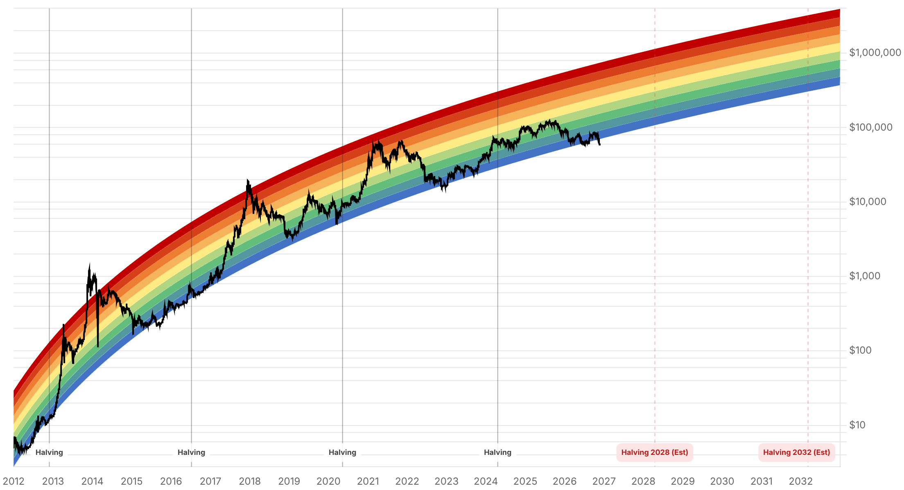

Reporte financiero
BTC cotiza en vivo a USD 60.339,89 (07:14 UTC), -1,42% frente al cierre previo de USD 61.211,15, revirtiendo de golpe el rebote de tres días reportado ayer y volviendo a caer por debajo de USD 61.000 -la serie semanal (18 al 24 de noviembre) marca ahora -4,20%. La novedad más concreta de hoy es que Farside/tftc.io finalmente actualizó su tabla y confirmó el dato del viernes 20 de noviembre que ayer solo podía citarse como una estimación no oficial de prensa (rango USD 124M-669M): la cifra oficial fue -USD 669,2M en salidas netas (IBIT de BlackRock: -USD 544,7M), en el extremo superior de ese rango y el peor día individual de la semana. Con ese dato ya confirmado, la semana del 16 al 20 de noviembre cierra en -USD 1.789,7M en salidas netas -la peor semana desde junio-, y noviembre acumula -USD 4.136,9M en 15 jornadas (13 de ellas negativas). Pese a esa actualización, Farside todavía no publica ningún dato para el lunes 23 de noviembre al momento de esta edición, por lo que la prueba de Wall Street señalada ayer como pendiente de resolver sigue sin poder evaluarse con esta fuente. El Fear & Greed Index se mantiene en 11 ('Extreme Fear') por tercer día consecutivo, sin mejorar ni empeorar. No se encontró comentario nuevo de Mark Yusko (su declaración más reciente ubicable sigue siendo del 18 de noviembre) ni de Christopher Waller, y tampoco novedades verificables sobre la exclusión de Strategy (MSTR) de los índices MSCI, la Clarity Act, BTCPay Server, la apelación del Reino Unido sobre los 61.000 BTC, Cantor Fitzgerald, ni el reclamo no verificado sobre Irán -se revisó cada uno y no hay cambios que reportar.
Tras encadenar tres días de recuperación hasta superar USD 61.400 en vivo ayer, bitcoin revierte hoy ese movimiento: cotización en vivo de USD 60.339,89 a las 07:14 UTC, -1,42% frente al cierre previo de USD 61.211,15. La serie de cierres diarios de Yahoo Finance de los últimos 7 días (18 al 24 de noviembre) muestra una caída semanal de -4,20%, con el máximo de la ventana en USD 62.987,27 (18-nov) y el mínimo en USD 58.798,98 (20-nov, el piso de varios meses ya reportado). El nivel de hoy queda a medio camino entre ese mínimo y el máximo de la semana, sin alejarse de forma decisiva de ninguno de los dos extremos.
La fuente de referencia de este reporte (Farside Investors, vía tftc.io), que ayer no mostraba ningún dato posterior al 19 de noviembre, actualizó hoy su tabla con la cifra oficial del viernes 20-nov: -USD 669,2M en salidas netas, con BlackRock (IBIT) aportando -USD 544,7M de ese total -el peor día individual de la semana, y en el extremo superior del rango de USD 124M-669M que ayer solo podía citarse como estimación no oficial de prensa secundaria-. Con los cinco días de esa semana ya confirmados (16-nov: +USD 8,0M; 17-nov: -USD 239,9M; 18-nov: -USD 306,4M; 19-nov: -USD 582,2M; 20-nov: -USD 669,2M), el total semanal queda en -USD 1.789,7M, la peor semana para los ETFs de bitcoin desde junio. El acumulado de noviembre (2 al 20, 15 jornadas) llega a -USD 4.136,9M, con 13 de esas 15 jornadas en rojo.
El reporte de ayer señaló la reapertura bursátil de EE.UU. del lunes 23-nov como la primera oportunidad real de ver participación institucional confirmada. Al momento de esta edición (07:14 UTC del martes 24-nov), la tabla de Farside/tftc.io sigue mostrando el 20 de noviembre como su entrada más reciente -sin dato para el lunes 23 (el sábado 21 no es jornada bursátil, por lo que no se espera dato ahí)-. No se encontró tampoco cobertura de prensa con fecha del cierre bursátil del lunes 23 que permita evaluar esa prueba de otra forma; se mantiene como un punto pendiente de confirmar, no como algo resuelto en ningún sentido.
El índice de alternative.me repite hoy el valor de 11, el mismo de ayer y de anteayer -tercer día consecutivo sin cambios, tras haber roto ayer la racha previa de mínimos marginales sucesivos-. La clasificación sigue siendo 'Extreme Fear'. Que el indicador permanezca inmóvil mientras el precio revierte su rebote de tres días sugiere que el mercado ya no estaba convencido del cambio de tendencia incluso antes de que ese rebote se revirtiera.
El comentario más reciente ubicable de Mark Yusko sigue siendo del 18 de noviembre (ciclo de liquidación apalancada, USD 58.000 como nivel clave, distribución de grandes tenedores desde octubre), sin matices nuevos hoy. No se encontraron fuentes fechadas para hoy que actualicen la condición de Waller sobre la Fed, la exclusión de Strategy (MSTR) de los índices MSCI (sigue efectiva al cierre del 30 de noviembre), la Clarity Act, BTCPay Server, la apelación del Reino Unido sobre los 61.000 BTC, Cantor Fitzgerald, ni el reclamo no verificado sobre Irán -se repite brevemente para que quede constancia de que se revisó, no porque haya cambiado.
| Periodo | Valor |
|---|---|
| 18 nov | 62987.27 |
| 19 nov | 61901.82 |
| 20 nov | 58798.98 |
| 21 nov | 60094.09 |
| 22 nov | 61161.91 |
| 23 nov | 61210.98 |
| 24 nov (en vivo) | 60339.89 |
| Periodo | Valor |
|---|---|
| Hoy | 11 |

“We are in a bad liquidation cycle right now.”
“If the Fed moves by a quarter point in December, officials should signal another hike is likely in January.”
El rebote de tres días se revirtió hoy: BTC vuelve a cotizar bajo USD 61.000 (-1,42% en vivo), con el Fear & Greed Index inmóvil en 11 ('Extreme Fear') por tercer día. La confirmación oficial de -USD 669,2M en salidas de ETFs para el viernes 20-nov -en el extremo alto del rango que ayer era solo una estimación- refuerza la lectura de que el rebote carecía de respaldo de flujos institucionales. La prueba de Wall Street del lunes 23-nov sigue sin poder confirmarse: Farside no ha publicado ese dato al momento de esta edición.
Con la semana del 16-20 de noviembre ya cerrada en -USD 1.789,7M (peor semana desde junio) y noviembre acumulando -USD 4.136,9M en 15 jornadas (13 negativas), el patrón de salidas sostenidas de ETFs que se insinuaba ayer como no confirmado queda ahora establecido con datos oficiales. La condición de Waller sobre señalar una alza adicional en enero si se opta por 25pb en diciembre sigue vigente, sin cambios desde ediciones anteriores.
Sin cambios en los objetivos de precio de largo plazo ya reportados en ediciones anteriores (Citigroup, Bernstein, Standard Chartered, Tom Lee, NYDIG, Armstrong, piso de costo de producción de JPMorgan en USD 94.000). La lectura de Mark Yusko -ciclo en su 'primavera' pese al dolor de corto plazo, sin matices nuevos desde el 18 de noviembre- sigue siendo la visión constructiva más reciente disponible.
Esta edición se genera sin que la fuente de referencia de ETFs haya publicado el dato del lunes 23-nov, por lo que la prueba de participación institucional señalada ayer sigue abierta. La confirmación de hoy del dato del viernes 20-nov (-USD 669,2M, en el extremo alto del rango estimado) sugiere que conviene esperar el dato oficial antes de interpretar cifras de prensa secundaria como definitivas.
El rebote de tres días que motivó cautela moderada ayer se revirtió hoy en una sola sesión, mientras los datos de ETFs ya confirmados muestran la peor semana desde junio y un noviembre con 13 de 15 jornadas en salidas netas. El Fear & Greed Index tampoco mejoró en ningún momento del rebote, lo que es consistente con un mercado que no se convenció del giro.
Sin cambios desde ediciones anteriores: Waller condicionó su apoyo a un movimiento de 25pb en diciembre a que se señale explícitamente otra alza en enero. Sigue siendo el catalizador macro dominante de mediano plazo, sin novedad hoy.